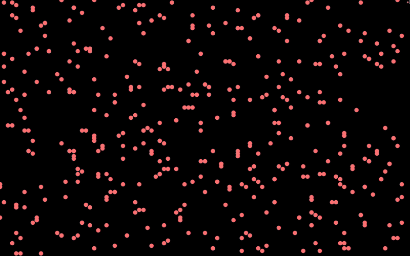

StarrySwarm
This is an art project that connects auditory and visual senses by visualizing how different swarm algorithms respond to live audio and music. I visualize KANTS, PSO, and BOIDS using Processing and compare their visual outputs across genres and sounds. In my thesis, I discuss how StarrySwarm, my implementation of BOIDS, was the most dynamic across movement and color and responsive to changes in sound.
Swarms: collective intelligent systems with a group of mobile agents that communicate with each other in response to local environment, often towards decision making (Honeybee waggle dances, ant pheromones, bird flocking, yeast, elephant herding, fish schooling.)
StarrySwarm
BOIDS, birds flocking (Craig Reynold 1965)


Kants
Ant pheromone clustering algorithm (Fernandes 2008) 
Particle Swarm Optimization
Flocking based optimization algorithm, (Kennedy and Eberhart 1995)

Video Gallery
Live Demo and Lecture
View the Code
Read my thesis here: